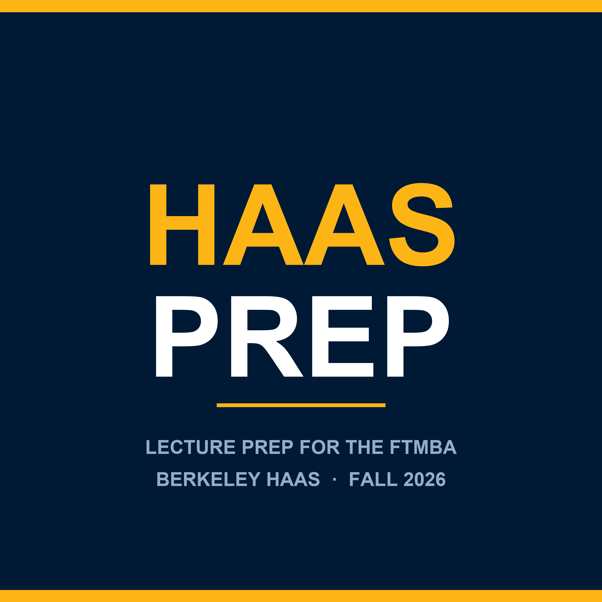

Haas Prep
Lecture prep for the Berkeley Haas FTMBA, Fall 2026.
Short episodes that walk through the assigned material for one class session,
so you arrive ready to think instead of translate.
Subscribe by pasting this into any podcast app:
https://yitzybitzyspider.github.io/haas-prep/feed.xml
Every episode names its sources in the description. Episodes are original
explanation written by a student. They are not recordings or readings of any
course material, and nothing here reproduces slides, cases, or textbook text.
This is an independent student study project, not affiliated with, produced by,
or endorsed by the Berkeley Haas School of Business or the University of California.